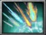

T - Stardust Rain(T) - [ Master Level ]
[Passive]
Enhance probes attacks.
.'. Upon landing a magic bullet, assists by firing an additional magic bullet that deals (Attack Damage X 100% + Main Stat X 7.5) damage
.'. Pierces non-boss enemies
[Active]
Relentlessly fire magic bullets together with the probes.
.'. Channeled up to maximum of 4 seconds